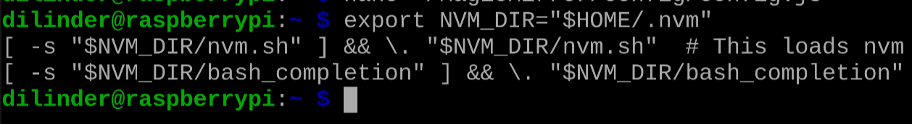
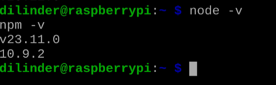
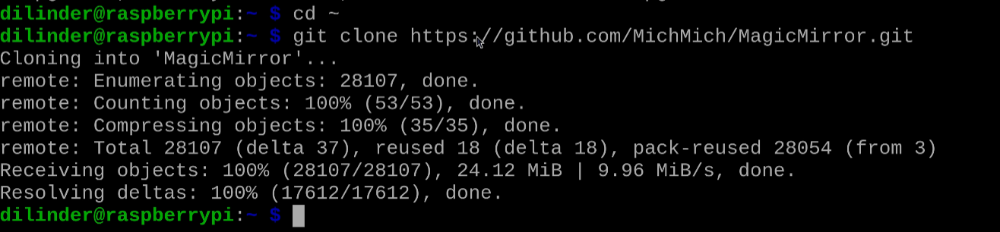
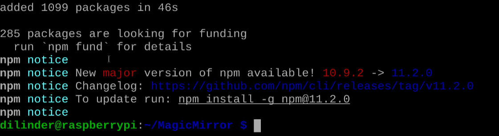

Installation Guide
Loss of Progress
An interrupt of power could cause the corruption of your SD card resulting a loss of progress.
Overview
This section guides you through installing the MagicMirror² software on your Raspberry Pi. MagicMirror² is an open-source platform that transforms your mirror into a customizable display with various modules for different types of information.
Preparing Your Raspberry Pi
Update Your System
Before installing any new software, ensure your system is up to date:
- Open a terminal window
- Run the following commands:
-
Wait for the process to complete (may take several minutes)
System Updates
Keeping your system updated ensures compatibility with the latest software and improves security.
Install Required Dependencies
MagicMirror² requires several dependencies to function properly:
-
Install Node Version Manager through the terminal window: (NVM)
-
Reload Reload your profile to start using Node Version Manager: (NVM)
export NVM_DIR="$HOME/.nvm" [ -s "$NVM_DIR/nvm.sh" ] && \. "$NVM_DIR/nvm.sh" # This loads nvm [ -s "$NVM_DIR/bash_completion" ] && \. "$NVM_DIR/bash_completion" 3. Install Install Node.js v20
-
Verify the installation:

Version Specification
Version may need to be specified.
-
Install other required packages:
Installing MagicMirror²
Clone the Repository
-
Navigate to your home directory:
-
Clone the MagicMirror repository:
 -
Navigate to the MagicMirror directory:
Install Dependencies and Run Setup
-
Install the required npm packages:

Installation Time
This process may take 10-15 minutes on a Raspberry Pi. Be patient and don't interrupt the process.
-
Copy the sample configuration:
-
Test the installation:
If successful, you should see the MagicMirror interface appear on screen.- Press
Ctrl+Qto exit the application
- Press
Completion of installing MagicMirror²
You've done it! Congratulations!
Conclusion
You have now successfully installed MagicMirror² on your Raspberry Pi and configured it to start automatically at boot. In the next section, we'll configure the basic modules and customize the display layout.